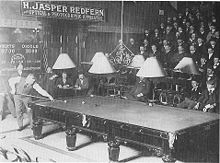

BILYARDS

English billiards,[1] called simply billiards[2] in Great Britain, where it originated, and in many former British colonies such as Australia, is a cue sport for two players or teams. Two cue balls (originally both white, with one marked e.g. with a black dot, but more recently one white, one yellow) and a red object ball are used. Each player or team uses a different cue ball. It is played on a billiards table with the same dimensions as a snooker table and points are scored for cannons and pocketing the balls. English billiards has also, but less frequently, been referred to as "the English game", "the all-in game" and (formerly) "the common game".